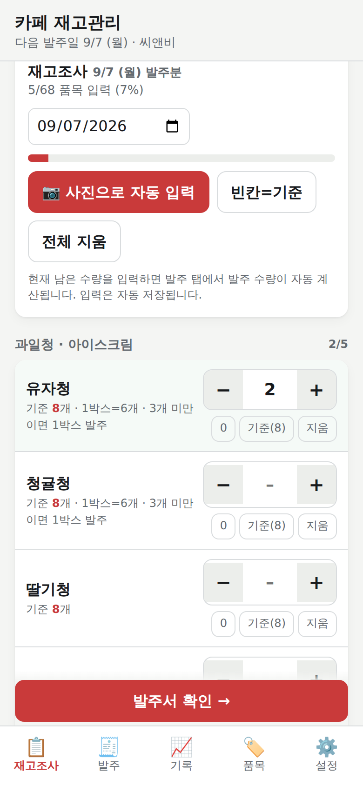
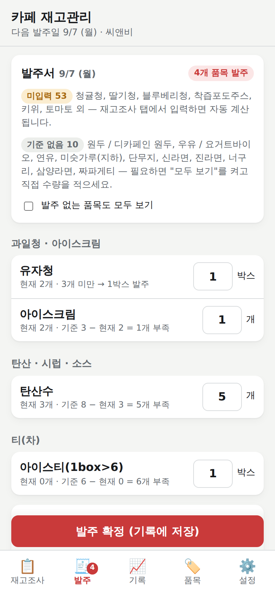
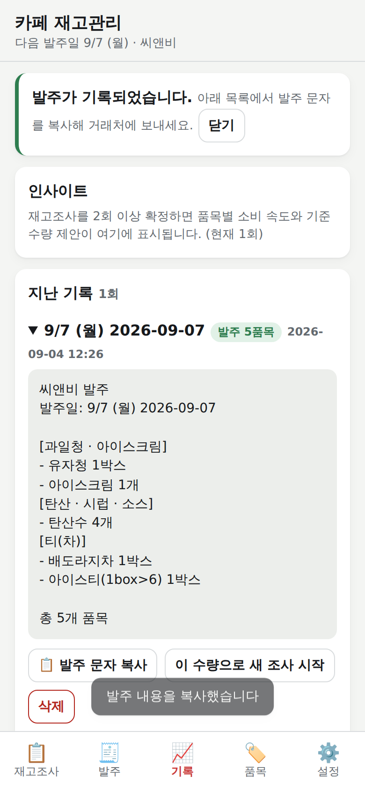

코팅 시트와 매직으로 하던 재고조사를 휴대폰 웹앱으로 옮기고, 직원 모두가 같은 재고를 보며, 세는 대신 예상 재고를 확인만 하고 발주 문자를 보내는 체계를 제안합니다.
빨간 숫자 = 기준 수량, 검은 손글씨 = 이번에 적은 값. 시트 3장, 품목 68개, 월·목 발주.
바쁘면 1장과 11장만 읽어도 결정할 수 있습니다. 5장은 "자동으로 세는 게 되나"에 대한 답이고, 6장은 "앱 말고 웹으로 직원 모두가 쓸 수 있나"에 대한 답입니다. 기술 용어는 부록에 풀어 두었습니다.
무엇을 — 주 2회 재고조사와 씨앤비 발주를 휴대폰 웹앱으로 처리합니다. 앱스토어 앱이 아니라 링크로 여는 웹앱이며, 홈 화면에 추가하면 앱처럼 보이고 오프라인에서도 열립니다.
왜 — 지금은 68개 품목을 매번 세고, 시트에 적고, 머리로 계산해서, 사진을 찍어 보냅니다. 기록이 남지 않아 "얼마나 쓰는지"를 모르고, 담당자 한 명에게 일이 몰립니다.
어떻게 — 세 단계로 갑니다.
| 단계 | 내용 | 직원이 느끼는 변화 | 기간 |
|---|---|---|---|
| 1단계 | 공유 저장소 연결, 링크 배포 | 누가 세든 같은 화면. 발주 문자는 버튼 하나로 복사. | 3~4 작업일 |
| 2단계 | 예상 재고 + 예외 확인 | 월·목 아침에 발주 초안이 이미 있고, "확인 필요" 표시된 10여 개만 실제로 본다. | 4~5 작업일 |
| 3단계 | 입고 확인 · 핵심 품목 개봉 기록 · (조건부) POS 연동 | 예상이 더 정확해져 확인 품목이 더 줄어든다. | 기록 3~4주 후 |
결정 요청 — ① 공유 저장소로 Firebase를 쓸지(계정 주체 포함) ② 예외 확인 방식 채택 ③ 사진 인식용 API 키 사용 여부 ④ POS 종류 ⑤ 시트에서 불확실했던 두 가지(레몬 2종, 각주 단위). 자세한 내용은 11장.
| 문제 | 왜 생기나 | 결과 |
|---|---|---|
| 매번 전부 센다 | 지난번에 몇 개였는지, 얼마나 쓰는지 기록이 없어 매번 처음부터 셉니다. | 회당 20~30분, 주 2회 |
| 계산·전달 실수 | 박스 단위(1box=6), 2BOX, "3개 미만이면 1박스" 같은 규칙을 사람이 기억해 적용합니다. | 과·소발주, 누락 |
| 기록이 사라진다 | 시트를 지우고 다시 쓰므로 소비 추세, 품절 빈도를 알 수 없습니다. | 기준 수량을 감으로 조정 |
| 한 사람에게 몰린다 | 시트와 규칙을 아는 사람만 할 수 있고, 다른 직원은 결과를 볼 수 없습니다. | 휴무·퇴사 때 공백 |
| 사진 공유의 한계 | 손글씨 사진은 검색·집계가 안 되고, 잘못 읽히기도 합니다. | 거래처와 확인 왕복 |
(1box>6) 표기 품목(바닐라시럽, 아이스티, 카페시럽)은 1박스 = 6개, 박스로 발주.2BOX, 박스 단위로 셉니다.| 지표 | 지금 | 목표 |
|---|---|---|
| 발주일에 실제로 세는 품목 | 68개 | 약 12개 |
| 재고조사 + 발주 문자 작성 시간 | 20~30분 | 10분 이내 |
| 규칙 적용 실수(박스 환산·재발주점) | 가끔 | 0건 (자동 계산) |
| 재고·발주 기록 보존 | 없음 | 전부, 담당자 포함 |
| 할 수 있는 직원 | 1~2명 | 전원 |
포함
제외 (이번 범위 아님)
시트 3장을 그대로 옮긴 웹앱이 완성되어 있습니다. 지금은 각자 휴대폰에만 저장되는 개인용이고, 6장의 공유 저장소를 붙이면 그대로 팀용이 됩니다.



| 화면 | 기능 |
|---|---|
| 재고조사 | 68개 품목을 시트 그룹별로 표시. 입력 즉시 저장. "빈칸=기준"으로 안 센 품목을 기준값으로 채우기. |
| 발주 | 기준−현재, 박스 올림, 최소 발주, 재발주점 규칙 자동 적용. 수량 직접 수정 가능. 카카오톡용 발주 문자 복사·공유. 확정하면 기록으로. |
| 사진 자동 입력 | 손글씨 시트 사진 또는 선반 사진을 찍으면 AI가 품목·수량을 읽어 채움. 확신도가 낮은 항목은 체크 해제 상태로 보여 줌. |
| 기록 | 조사·발주 이력, 품목별 하루 소비량, 자주 품절되는 품목, 기준 수량 변경 제안. |
| 품목 | 품목 추가·편집·숨김, 기준 수량, 1박스 개수, 발주·세는 단위, 규칙, 사진 인식용 별칭. |
| 설정 | 매장·담당자 이름, 발주 요일, 백업 내보내기/불러오기(API 키 제외), 초기화. |
카페 재고는 카메라나 센서가 보기 어려운 곳에 있습니다. 닫힌 박스 안, 앞 병에 가려진 뒷줄, 지하 창고의 미숫가루, 자몽·레몬·청포도처럼 생김새가 같은 병. 그래서 "기계가 다 세 준다"보다 "사람이 확인해야 할 것만 골라 준다"가 현실적인 목표입니다.
| 방법 | 어떻게 | 잘 맞는 품목 | 한계 | 준비 |
|---|---|---|---|---|
| 선반 사진 세기 있음 | 선반별 사진을 찍으면 AI가 보이는 개수를 셈 | 앞줄에 한 줄로 보이는 병·팩(시럽, 티, 주스) | 가려진 것, 닫힌 박스, 비슷한 병. 결과 확인 필요 | 없음 |
| 예상 재고 | 지난 조사값 + 입고 − 평균 소비×경과일 | 소비가 일정한 대부분 품목 | 추정이라 틀릴 수 있음. 주말·행사 변동 | 기록 3~4회 |
| 예외 확인 제안 | 예상값의 오차가 발주 결정을 바꿀 수 있는 품목만 표시해 실측 | 전 품목 | 예상 재고가 먼저 있어야 함 | 기록 3~4회 |
| 입고 확인 | 배송 도착 시 "입고 확인" 한 번. 부족분 표시 | 전 품목 | 안 누르면 예상값이 어긋남 | 습관 1개 |
| 개봉 −1 | 새 병을 딸 때 그 품목을 한 번 탭 | 개봉 시점이 분명한 핵심 품목(청, 원두, 우유) | 직원 전원이 빠짐없이 눌러야 함 | 습관 1개 |
| POS 판매 연동 | 메뉴 판매량 × 레시피 사용량으로 이론 소비량 계산 | 레시피가 정해진 음료 재료 | POS 내보내기·레시피 표 필요. 폐기·서비스 소비는 못 잡음 | POS 확인 |
| 저울·고정 카메라 | 선반 무게나 매일 자동 촬영 | 대형 매장 | 장비·설치·유지 비용 | 장비 |
발주에 필요한 것은 정확한 개수가 아니라 두 가지 판단입니다. 기준보다 얼마나 부족한가, 그리고 재발주점(예: 3개 미만)을 넘었는가. 예상값에 오차를 붙여도 이 판단이 바뀌지 않으면 세지 않습니다. 판단이 갈리는 품목만 "확인 필요"로 표시합니다.
기록이 3~4주(6~8회) 쌓이면 확인 대상은 68개 중 10~15개 안팎으로 줄어들 것으로 봅니다. 정확한 수는 매장의 소비 변동에 달려 있어 도입 후 측정합니다. 처음 2~3주는 전 품목을 세되, 앱이 예상값을 미리 채워 두므로 "세기"가 "틀린 것만 고치기"로 바뀌어 이 기간에도 시간은 줄어듭니다.
POS에서 메뉴별 판매 수량을 내려받을 수 있고, 메뉴마다 재료 사용량(예: 유자차 1잔 = 유자청 30g)을 정리할 수 있다면 소비량을 추정이 아니라 계산으로 얻습니다. 예상 오차를 크게 줄이는 가장 강력한 방법이지만 준비물이 많아 3단계 이후, 조건부로 둡니다. POS 제품명을 알려 주시면 내보내기 가능 여부를 먼저 확인하겠습니다.
앱스토어 앱 대신 링크로 여는 웹앱을 씁니다. 홈 화면에 추가하면 아이콘·전체 화면·오프라인 실행까지 앱과 같습니다. 지금 부족한 것은 하나, 직원들이 같은 데이터를 보는 공유 저장소입니다.
| 방법 | 장점 | 직원이 필요한 것 | 단점 |
|---|---|---|---|
| Firebase 추천 구글이 운영하는 데이터 저장소 | 실시간 동기화, 오프라인 입력 후 자동 반영, 두 명이 동시에 세도 품목별로 합쳐짐, 카페 규모면 무료 | 링크만 (로그인 없음) | 운영자가 구글 계정으로 프로젝트를 한 번 만들어야 함(약 10분, 카드 등록 불필요) |
| 구글 스프레드시트 연동 | 데이터를 시트에서도 바로 볼 수 있음 | 링크만 | 동시 입력에 약하고 반응이 1~2초 느림. 실시간 갱신 없음 |
| claude.ai 공유 페이지 | 설정 0. 지금 시험 중인 페이지에 공유 기능만 추가 | 직원 전원 Claude 계정 | 계정 조건이 카페 현실과 맞지 않을 가능성이 큼 |
| 직접 서버 운영 | 자유도 최대 | 링크만 | 월 비용, 장애 대응, 업데이트를 누군가 계속 맡아야 함 |
1단계(공유 저장소만 있는 상태)에서는 2번이 "전 품목 입력"이고, 나머지는 같습니다.
| 상황 | 하는 일 |
|---|---|
| 새 직원 합류 | 링크를 카톡으로 보냄 → 열어서 홈 화면에 추가 → 설정에서 이름 입력. 끝. |
| 새 품목 · 기준 변경 | 품목 탭에서 추가·수정. 모든 기기에 즉시 반영. |
| 핵심 품목 개봉(선택) | 새 유자청을 딸 때 재고조사 탭에서 유자청 "−1" 한 번. |
| 기준 수량 재검토 | 기록 탭의 "기준 수량 제안"(4일 소비량×1.5)을 보고 "적용"만 누름. 월 1회 권장. |
| 지하 창고(미숫가루 등) | 신호가 없어도 입력 가능. 올라오면 자동 동기화. |
작업일 기준이며, 결정(11장)이 나면 바로 시작할 수 있습니다. 각 단계는 끝날 때마다 실제로 쓸 수 있는 상태입니다.
| 단계 | 만드는 것 | 끝나면 할 수 있는 것 | 소요 | 필요한 것 |
|---|---|---|---|---|
| 1단계 공유 | Firebase 연동, 매장 코드 링크, 품목별 병합, 담당자 표시, GitHub Pages 배포 | 직원 전원이 같은 재고·발주 기록을 봄. 발주 문자 복사·전송. | 3~4일 | Firebase 프로젝트 설정값, Pages 설정 클릭 |
| 2단계 예상·예외 | 요일 구간별 소비 속도, 예상 재고 미리 채우기, "확인 필요" 판정과 정렬, 오차 기록 | 발주 아침에 초안이 준비되고 확인 대상만 세면 됨. | 4~5일 | 기록 3~4회 (1단계 사용 중 자연히 쌓임) |
| 3단계 정밀 | 입고 확인, 핵심 품목 개봉 −1, 예상 오차 리포트 | 확인 대상이 더 줄고 품절 위험 품목이 먼저 보임. | 2~3일 | 핵심 품목 선정 |
| 조건부 POS | 판매 내역 가져오기, 메뉴별 레시피 표, 이론 소비량 | 소비량을 추정이 아닌 계산으로. | POS에 따라 | POS 내보내기, 레시피 정리 |
| 주 | 매장에서 하는 일 | 측정 |
|---|---|---|
| 1주 | 링크 배포, 홈 화면 추가, 월·목 전 품목 입력(앱으로). 시트는 병행. | 입력 시간, 사진 인식 정확도(시트 사진 5~6장) |
| 2주 | 시트 없이 앱만. 입고 확인 습관 시작. | 발주 문자 오류 0건 확인 |
| 3~4주 | 예상 재고 켜기. "확인 필요" 품목만 세고 나머지는 예상값 검토. | 확인 품목 수, 예상 오차, 조사 시간 |
| 5주~ | 핵심 품목 개봉 −1(선택), 기준 수량 제안 적용. | 품절 발생 건수 |
| 항목 | 월 비용 | 설명 |
|---|---|---|
| 웹앱 호스팅 (GitHub Pages) | 0원 | 정적 파일 무료 호스팅. 트래픽 제한(월 100GB)은 카페 사용량의 수천 배. |
| 공유 저장소 (Firebase) | 0원 | 무료 구간: 하루 읽기 5만 회·쓰기 2만 회. 직원 5명이 하루 종일 써도 수백 회 수준. 카드 등록 없이 시작. |
| 사진 인식 (선택) | 수백~수천 원 | 사진 한 장에 수십 원(Anthropic API 사용 시). 주 2회 시트 3장 기준 월 1,000원 안팎. 안 쓰면 0원. |
| 직원 기기 | 0원 | 각자 휴대폰. 매장 공용 태블릿이 있으면 그것도 같은 링크로. |
| 앱스토어 등록 (선택, 미권장) | 연 12만 원 안팎 | 애플 개발자 계정 연 99달러 + 구글 1회 25달러. 웹앱으로 충분하면 불필요. |
개발은 이 제안대로 진행하면 1~3단계 합쳐 약 10~12 작업일입니다. 유지관리는 품목·기준 변경은 직원이 앱에서 직접 하고, 코드 변경이 필요한 일은 드뭅니다.
| 위험 | 가능성 | 대응 |
|---|---|---|
| 직원이 앱을 안 쓰고 시트로 돌아감 | 중 | 첫 2주는 시트와 병행. 앱이 시트보다 빠르다는 것을 발주 시간으로 보여 줌. 필수 습관을 2개(월·목 열기, 입고 확인)로 제한. |
| 예상 재고가 틀려 품절·과발주 | 중 | 결정이 갈리는 품목은 항상 실측. 오차가 커진 품목은 자동으로 확인 대상에 복귀. 직접 센 값이 항상 우선. 첫 2~3주는 전 품목 실측. |
| 입고 확인을 빠뜨림 | 중 | 발주 후 예상 배송일이 지나면 "입고 확인 안 됨" 알림 표시. 미확인 시 발주량 전량 입고로 가정하고 다음 실측에서 보정. |
| 링크 유출 | 낮 | 매장 코드 재발급으로 즉시 차단. 필요 시 직원별 PIN 추가. |
| 저장소 장애·데이터 유실 | 낮 | 휴대폰에 마지막 상태가 남아 오프라인으로 계속 사용. 주 1회 자동 JSON 백업 안내. |
| 사진 인식 오류 | 중 | 결과는 항상 확인 화면을 거침. 확신도 낮은 항목은 체크 해제. 비슷한 병(자몽·레몬·청포도)은 라벨 앞 정리로 개선. |
| 시트 판독 오류(기준 수량 등) | 낮 | 68개 품목 전부 두 번 독립 판독 후 대조. 남은 불확실 2건은 11장에서 확인 요청. |
아래 다섯 가지가 정해지면 1단계를 바로 시작합니다. 기본안(굵게)을 그대로 택하셔도 됩니다.
| 상황 | 계산 | 예 |
|---|---|---|
| 일반 품목 | 발주 = 기준 − 현재 (0 미만이면 0) | 탄산수 기준 8, 현재 3 → 5개 |
| 박스 발주 품목 (1box>6) | 부족 개수 ÷ 6을 올림한 박스 수 | 아이스티 기준 6, 현재 0 → 1박스 |
| 기준이 박스 단위 (2BOX) | 박스로 세고 박스로 발주 | 배도라지차 기준 2박스, 현재 1박스 → 1박스 |
| 세는 단위가 박스인 품목 | 박스 수 × 1박스 개수로 환산해 계산. 1박스 개수가 없으면 계산하지 않고 경고 | — |
| 최소 발주 수량 | 부족분이 있으면 최소 수량 이상으로 | — |
| 재발주점 규칙 (유자청·청귤청) | 현재 < 3 이면 1박스, 아니면 0. 기준 수량은 쓰지 않음 | 유자청 현재 2 → 1박스 / 현재 3 → 없음 |
| 미입력 품목 | 발주 0, 발주 탭에 경고. 기준·규칙 없는 품목은 "기준 없음"으로 따로 표시 | 원두, 우유, 라면류 |
| 직접 수정 | 발주 탭에서 고친 수량이 우선. 재고조사 값을 다시 고치면 자동 계산으로 복귀 | — |
| 그룹 | 품목 |
|---|---|
| 과일청 · 아이스크림 | 유자청, 청귤청, 딸기청, 블루베리청, 아이스크림 |
| 주스 · 생수 | 착즙포도주스, 키위, 토마토, 레몬(주스), 노아(오렌지·당근·망고·키위), 골든메달사과주스, 에비앙, 달콤사과 |
| 원두 · 우유 | 원두/디카페인 원두, 우유/요거트바이오, 연유, 디카페인콜드브루 |
| 탄산 · 시럽 · 소스 | 탄산수, 바닐라시럽, 자몽, 레몬(시럽), 청포도, 카페시럽, 헤이즐넛 시럽, 카라멜소스, 카라멜시럽, 초코소스, 키위소스 |
| 티 | 보성그린티, 얼그레이, 배도라지차, 루이보스, 작설녹차, 캐모마일, 파인우롱, 아이스티, 애플티 |
| 토핑 · 기타 | 각설탕, 시나몬가루, 오렌지가니쉬, 대추, 잣, 미숫가루(지하) |
| 브런치 | 망고푸딩, 사과푸딩, 스모크햄, 콘샐러드, 에그샐러드, 감자샐러드, 살사후실리샐러드, 체다치즈슬라이스, 시리얼, 키위드레싱, 부탄가스, 식용유, 양배추, 딸기잼, 일회용 버터, 당근, 단무지 |
| 라면 | 신라면, 진라면, 너구리, 삼양라면, 짜파게티 (컵라면은 사용 안 함) |
| 용어 | 뜻 |
|---|---|
| 웹앱 / 홈 화면 추가 | 브라우저에서 여는 앱. 아이폰은 Safari 공유 → "홈 화면에 추가", 안드로이드는 Chrome 메뉴 → "홈 화면에 추가". 설치 파일·스토어 없음. |
| 기준 수량 | 시트의 빨간 숫자. 발주 후 이 수량이 되도록 채움. |
| 재발주점 | 이 개수 미만이 되면 정해진 양을 발주하는 기준(유자청·청귤청의 3개). |
| 예상 재고 | 지난 실측값 + 그 뒤 입고 − 평균 소비 × 지난 일수로 계산한 추정치. |
| 예외 확인 | 예상값의 오차가 발주 결정을 바꿀 수 있는 품목만 실제로 세는 방식. |
| Firebase | 구글이 운영하는 데이터 저장 서비스. 여러 기기가 같은 데이터를 실시간으로 공유할 때 씀. 소규모는 무료. |
| GitHub Pages | 웹앱 파일을 무료로 올려 두는 곳. 링크로 접속. |
| API 키 | 사진 인식 AI를 쓰기 위한 비밀번호 같은 문자열. 사용한 만큼 과금. |